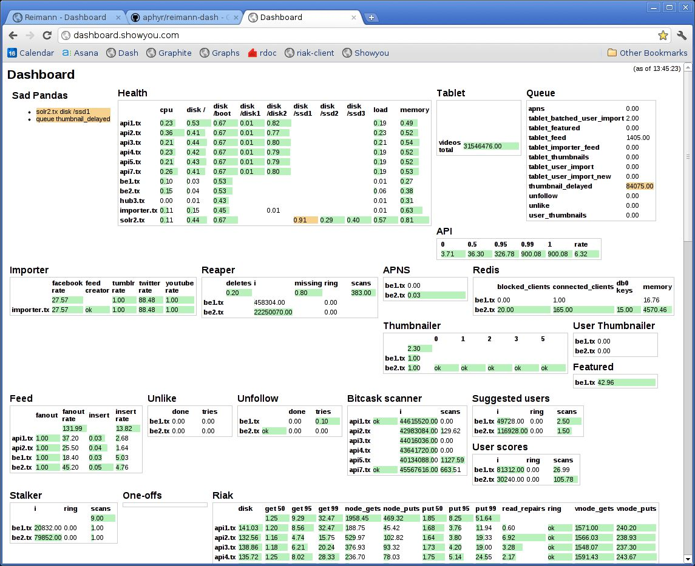

What's going on in there, anyway?
The Reimann Dashboard is a Sinatra app that makes it easy to write complex views over thousands of states. It queries Reimann's index for the states you care about and presents them as charts. Hover over any state for details.

Get started at Github. It's available as a Gem.